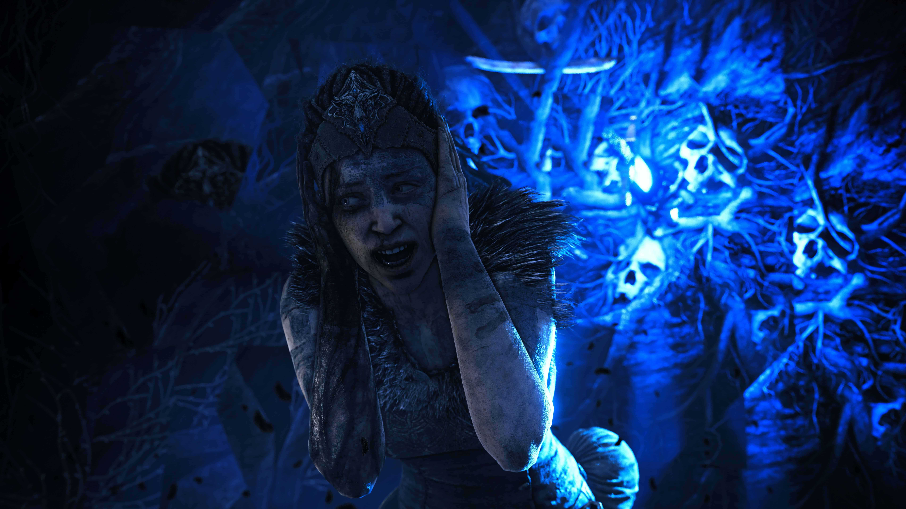
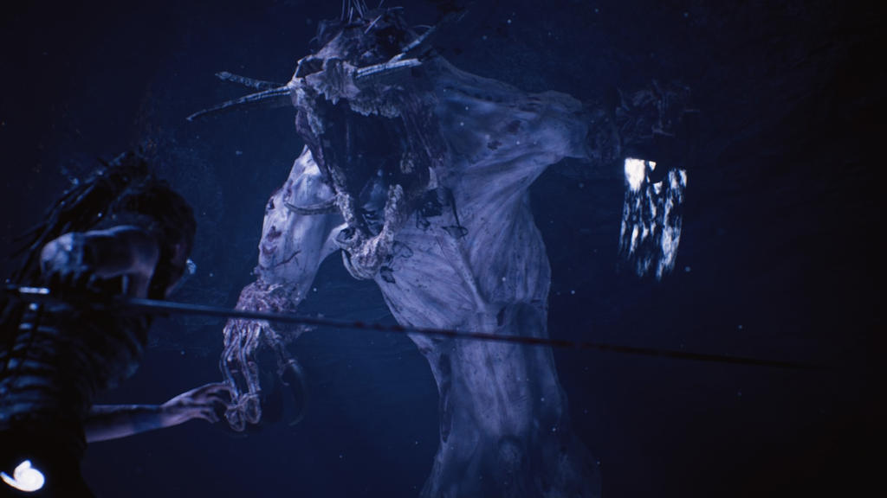

Történet
A történet középpontjában Senua, egy kelta harcosnő áll, aki a személyes démonjaival és mentális betegségeivel küzd, miközben megpróbálja megmenteni szerelme, Dillion lelkét Helheim sötét világából. A játék a pszichózis ábrázolását helyezi a középpontba, hitelesen bemutatva a hallucinációkat, a hangokat és a belső küzdelmeket, amelyekkel Senua nap mint nap szembesül. Ehhez a fejlesztők pszichológusokkal és pszichózisban szenvedő személyekkel konzultáltak, hogy hitelesen mutathassák be ezt az állapotot.
A karaktered olyan ősi mágia rejtélyeit fedezheti fel, amelyeket senki sem tud használni, és egyedül te rendelkezhetsz ezzel a különleges képességgel. A történet során olyan döntéseket kell hoznod, amelyek nemcsak a saját sorsodra, hanem a varázsvilág jövőjére is hatással lehetnek. 
Játékmenet
A játékmenet szoros egyensúlyt teremt a harc, a rejtvények és a felfedezés között. A harc egyszerű, de intenzív, a rejtvények pedig Senua mentális állapotához kötődnek, ahol a játékosoknak a környezetet kell figyelniük és értelmezniük. A játékban nincsenek HUD vagy hagyományos irányjelzők, ami fokozza az immerziót.
A Hellblade vizuális megjelenítése lélegzetelállító, különösen figyelemre méltó az arcanimációk és a hangdizájn. A hangtechnika binaurális audio segítségével teremti meg azt az érzést, hogy Senua fejében vagyunk, és halljuk azokat a belső hangokat, amelyek folyamatosan beszélnek hozzá.
A Hellblade: Senua's Sacrifice nem csupán egy játék; ez egy mélyen elgondolkodtató élmény, amely az emberi elme sebezhetőségéről és erejéről szól. Számos díjat nyert, és széles körben elismerték művészi megközelítése és bátor témaválasztása miatt.